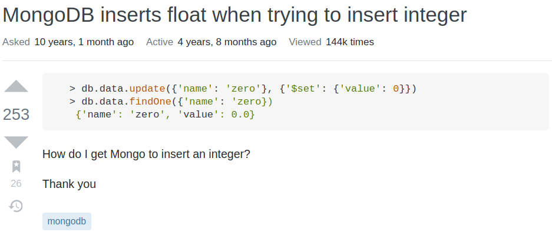

*** ja sam na 127.0.0.1 kao i ove prije
laranotreallycroft Access control is not enabled for the database. Read and write access to data and configuration is unrestricted do ovoga je ipak, to ti se nije pojavilo?
Kako 4. zadatak riješiti? Ovaj mi upit nista ne vraca: db.kolekcija.find({score: 1.0}, {price:1, title:1, time:1, _id:0}).sort({time: -1, _id: 1}).skip(brZapisa - 20).limit(10)
db.kolekcija.find({score: 1.0}, {price:1, title:1, time:1, _id:0}).sort({time: -1, _id: 1}).skip(brZapisa - 20).limit(10)
MGJ probaj sa “review.score”:1.0, “review.score”:1, “product.price”:1…
Ducky jesam vec i opet nista :/
Ako me ovaj projekt u išta uvjerio, to je da je MongoDB gola kurčina za analitičke upite naspram SQL-a.
MGJ ja imam .sort({"review.time": 1, _id: -1}).limit(10) umjesto skip, nez oce pomoc btw si uspio ovo MGJ
.sort({"review.time": 1, _id: -1}).limit(10)
Ducky napokon proradilo, hvala punoo 💙 Jos sam skuzila da mi se score spremio kao integer, a ne float, je l znas mozda kako to popravit? A sta se tice tog zadatka iz 2. dijela, u \etc\hosts mi bilo sve zakomentirno (# ispred svakog retka). Sad mi je ovako i radi: 127.0.0.1 rs0 127.0.0.1 rs1 127.0.0.1 rs2 127.0.0.1 rs3 127.0.0.1 rs4
Ducky imam isto samo sto sam sad skuzila da treba predzadnjih 10, a ne zadnjih 10, pa mislim da i dalje treba skip(10)?
MGJ isuseee hvlaaaa stvarno neznam, možda si jednostavno unijela score u bazu kao integer?
reygrep shit… nisam čito zadatak 🙁
MGJ iskombiniraj ovo
db.foo.find( { 'bad' : { $type : 1 } } ).forEach( function (x) { x.bad = new String(x.bad); // convert field to string db.foo.save(x); });
i to da se int u float pretvara ovako (4).toFixed(2) -> 4.00
(4).toFixed(2)
Ducky meni pricas tri put sam ga prepravljala 😂 prvi put sam izlistala prvih 10 jer nisam vidla ‘predzadnji’ drugi put sam izlistala zadnjih 10 jer je moj mozak odlucio ‘predzadnji’ shvatit kao ‘zadnji’ i sad treca sreca should be right 😅 a svaku izmjenu je trigeralo pitanje ovdje za taj zadatak tako da ekipa koji ste spitavali u vezi 4. zadatka you da best
reygrep
Ducky Ne kuzim zasto mi se price spremilo kao float, a score nije, a istu stvar sam radila 😂
reygrep ja sam zapeo na drugom putu. Još sam im stavio u rješenje prvih i zadnjih 10, 2 slike iz basha i robo 3T-a i napiso da je zadatak dvosmislen. 😆
MGJ mozda je i do ovoga  nemre ti garantirat kak ce ga spremat
Koliko vremena otprilike treba za drugi dio projekta, može li se odraditi u par sati?
Koristim automotive (al nije pre bitno) Koliko vam se razlikuje broj dokumenata u kolekciji za prva 4. i u kolekciji koju stvarate u 5. zadatku?
IdeGas prvi dio 27980 - drugi dio 4221
reygrep Uspijem sve prebaciti u novu kolekciju(bez tih duplikata), ali kako to napraviti nad postojecom kolekcijom?
nad kojim atributom treba napravit indeks u 9. zad?
reygrep ja sam nad userId